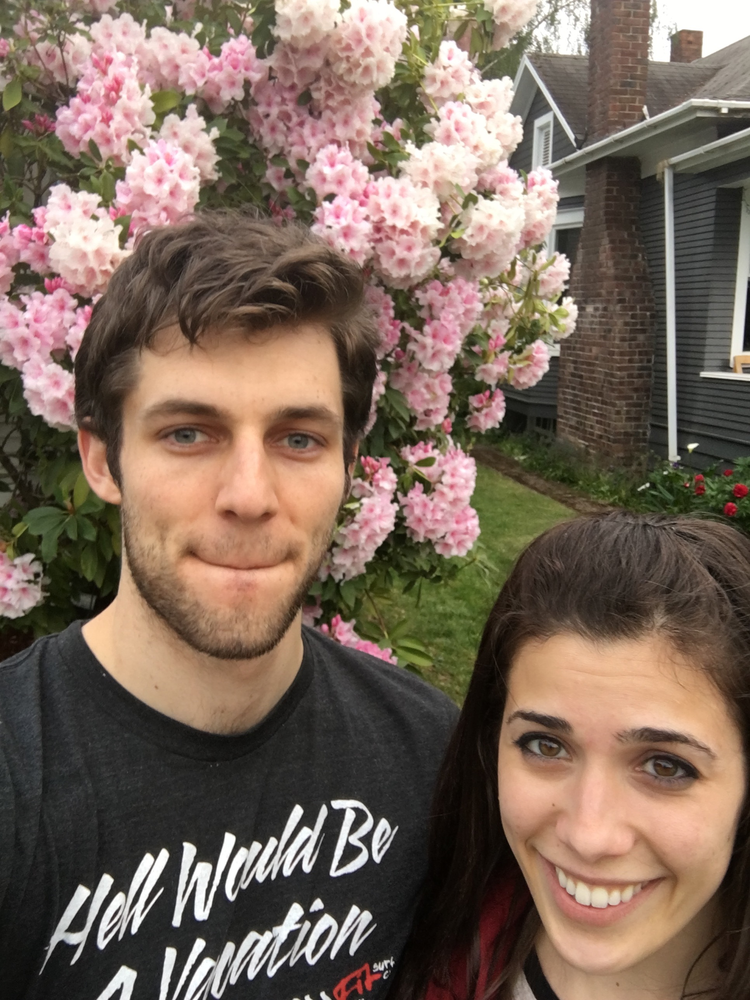

Last week of work, moving to Cali, seeing Christine
Here are thoughts in my head as I sit here at my desk on a Wednesday:
I am halfway through the last week of work for Starbucks.
Last night at Foundation Crossfit, Tina, Sarah, and Margot comforted me about my situation. I admire those women greatly, and all the more so for their compassion.
I hate saying goodbye; and it's not because saying goodbye is too emotional or sad. It just seems odd to me to make all this time now to connect with people. A relationship is built on the daily actions, activities, and sharing with one another. Whether or not we have a chance to "say goodbye" doesn't affect that. It's "see you when I see you"...which is the way it is most of the time. You never know what will happen to you or others.
I've told all of the teams that I work with that my last day will be Friday. There's going to be a large coffee tasting for all of the great people that I've met here. I have 1:1 connections with people who won't be able to attend. Some people are shocked, others are excited, and everyone is supportive.
Though I had been ready to consider moving for bootcamp in June, the decision to bootcamp right now was influenced by Christine's (my girlfriend) situation. For those that don't know, Christine had a neurological episode that we believe is a form of relapsing-remitting MS. I took her to the hospital on 4/25, where we heard the diagnosis for the first time. We spent the next several days in an adrenaline haze. I don't remember much of the week. We revisited the hospital many, many times...struggling through the administrative gauntlet as we tried to better understand how to manage her condition.
The week after her attack, she began to steadily improve and her grandma came to take care of her. Granny Bazeghi took her back to Santa Barbara about a week later.
Having been apart for a couple of weeks, which is not very fun, we thought about how we'd manage future situations.
We need to live in California. Our families and support structures are all there. We're going to establish home as a place neither of us have ever lived.
Christine has continued to improve and is even driving herself to coffee shops now. We'll meet up this Saturday and spend the week together before my bootcamp begins. The plan is that she'll join in mid-July, or potentially earlier (pending her recovery).
We're doing a lot all at once. With Christine's attack, I've decided I'd rather do bootcamp right now and be closer to her. Simultaneously, she will do her remote program as she recovers. In addition, we're continuing to see neurologists while we adjust to life in California.
We both laughed last night at how poor we are. This is a hard time financially, but we're hoping this will be a fun time to look back on. That time when we were poor and had to ask our family members for money. Our families have been wonderfully supportive, and that's a gift.
Onto the next adventure.
